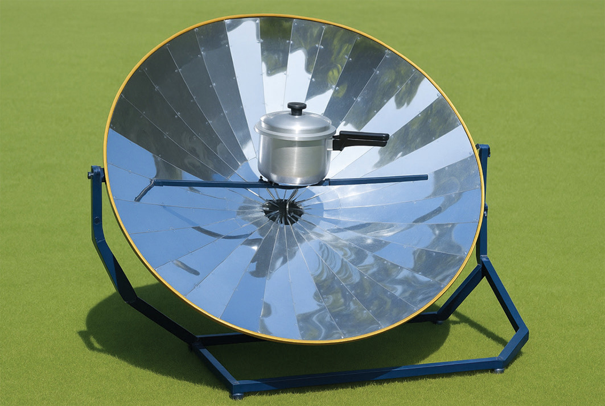

Parabolic solar cookers: These solar cookers convert sunlight directly into heat by concentrating it through a parabolic arrangement of reflectors.Figure 4.42 shows a parabolic solar cooker.

Figure 4.42: A parabolic solar cooker

Project 4.2
Design and construct a simple solar cooker using a concave mirror or a parabolic reflector.Utilise materials such as cardboard, aluminium foil, and a transparent cover.Test the cooker by attempting to heat or cook food items with sunlight.Document the process, results, and any challenges encountered.
Exercise 4.3
1. Why do concave mirrors produce both real and virtual images, but convex mirrors produce only virtual images?
2. A nail of 6 cm in height is placed 30 cm from a converging mirror of focal length 10 cm. Determine the position and height of the image. State also whether the image is real or virtual, enlarged or diminished.
3. An object is 15 cm in front of a diverging mirror. What is the focal length of the mirror if a virtual image is formed 10 cm behind the mirror?
4. A 4 cm tall object is placed 10 cm from a concave mirror with a radius of curvature of 12 cm. Determine the focal length of the mirror, image distance, image height, and nature of the image.
5. An object is placed 30 cm in front of a concave mirror with a 15 cm focal length. Determine the image distance and magnification. Is the image real or virtual, upright or inverted?
6. Name any three real life uses for each of the concave and convex mirrors.